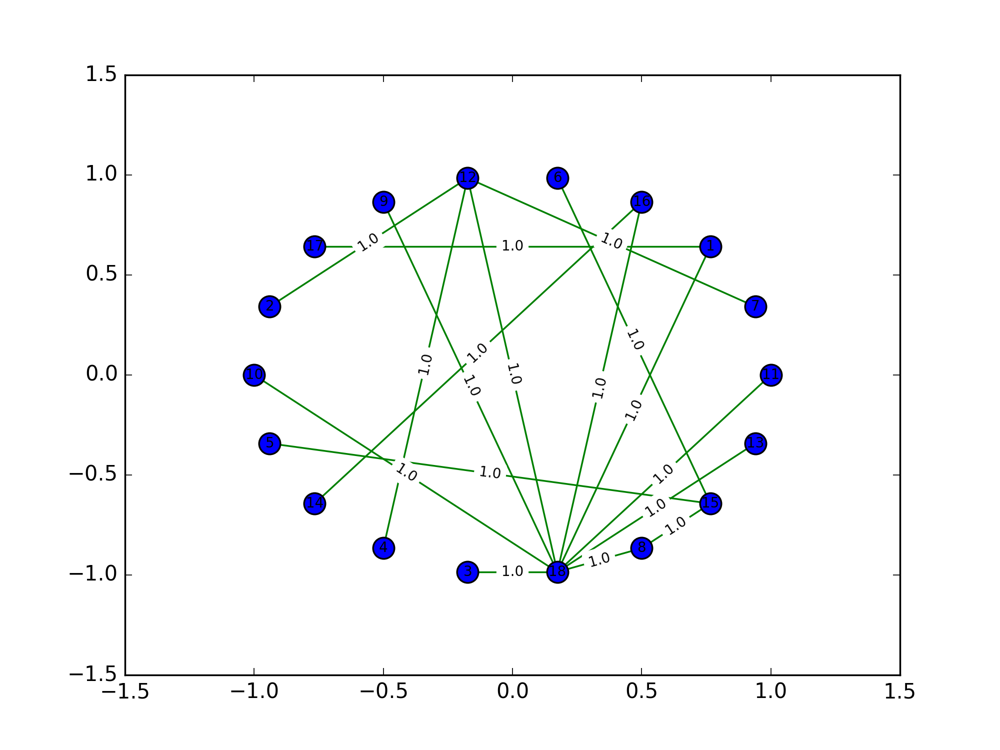

Árvores geradoras mínimas e comunidades
Objetivos do Trabalho
Escolher um dataset específico (grafo ponderado armazenado em arquivo.gml, .graphml, .txt, .net, etc) e implementar o algoritmo de Prim para extrair uma Minimum Spanning Tree (MST) de G.
MST
Seja G um grafo com custos nas arestas. (Os custos podem ser positivos, negativos, ou nulos.) O custo de um subgrafo T de G é a soma dos custos das arestas de T.
Árvore geradora de custo mínimo (MST): Uma árvore geradora mínima (= minimum spanning tree) de G é qualquer árvore geradora de G que tenha custo mínimo. Em outras palavras, uma árvore geradora T de G é mínima se nenhuma outra árvore geradora tem custo estritamente menor que o de T. Árvores geradoras mínimas também são conhecidas pela sigla MST.
Implementação
O algoritmo de Prim: Seja T uma árvore do grafo G. A lista L de T é o conjunto de todas as arestas de G que têm uma ponta em T e outra fora. Portanto, a lista L de T nada mais é que o conjunto de vértices de T.
Cada iteração do algoritmo de Prim começa com uma subárvore T. No início da primeira iteração, T consiste em um único vértice.
O algoritmo de Prim tem caráter guloso: em cada iteração, pega a aresta mais barata da lista sem se preocupar com o efeito global dessa escolha. A prova de que essa estratégia está correta segue do critério de minimalidade baseado em cortes.
Após aplicação do script criado em um um dataset (grafo ponderado) será feita uma análise dos resultados obtidos, após o script gerar a MST para o referido dataset.
Algoritomo:
1 2 3 4 5 6 7 8 9 10 11 12 13 14 15 16 17 18 19 20 21 22 23 24 25 26 27 28 29 30 31 32 33 34 35 36 37 38 39 40 41 42 43 44 45 46 47 48 49 50 51 52 53 54 55 56 57 58 59 60 61 62 | import networkx as nx #Para a parte de criar e gerenciar grafos import numpy as np import matplotlib.pyplot as plt #Para exibir na tela def MST_Prim(G,r): Q = [] # Fila de prioridades for v in G.nodes(): if v is r: G.node[v]['lambda'] = 0 else: G.node[v]['lambda'] = np.Infinity G.node[v]['predecessor'] = None Q.append([v, G.node[v]['lambda']]) S = [] # Ja finalizados while(Q): Q.sort(key=lambda item: item[1]) u = Q.pop(0) S.append(u[0]) for v in G.neighbors(u[0]): if (v not in S): if (G.node[v]['lambda'] >= G.edge[u[0]][v]['weight']): Q.remove([v, G.node[v]['lambda']]) G.node[v]['lambda'] = G.edge[u[0]][v]['weight'] G.node[v]['predecessor'] = u[0] Q.append([v, G.node[v]['lambda']]) MST = nx.Graph() MST.add_nodes_from(G.nodes()) for v in S: if G.node[v]['predecessor'] != None: u = G.node[v]['predecessor'] MST.add_edge(v, u, weight=G.edge[v][u]['weight']) return MST def main(): G = nx.read_weighted_edgelist("/home/felipe/pycharmprojects/Grafos/Grafo.txt") MST = MST_Prim(G,'1') pos = nx.circular_layout(G) Desenha(G, pos, 'r', 'GrafoOriginal') Desenha(MST, pos, 'g', 'MST') def Desenha(G, pos,lineColor, filename): nx.draw_networkx_nodes(G, pos, node_color='b', node_size=150) nx.draw_networkx_edges(G, pos, edgelist=G.edges(), edge_color=lineColor, arrows=True) nx.draw_networkx_labels(G, pos, font_size=8) labels = nx.get_edge_attributes(G, 'weight') nx.draw_networkx_edge_labels(G, pos, edge_labels=labels, font_size=8) plt.savefig('/home/felipe/pycharmprojects/Grafos/primImages/'+filename+'.png',dpi=250) plt.clf() if __name__=="__main__": main() |
Resultados:
Grafo Original

Árvore geradora mínima do grafo acima
Grafo simplificado para melhor visualização do algoritmo